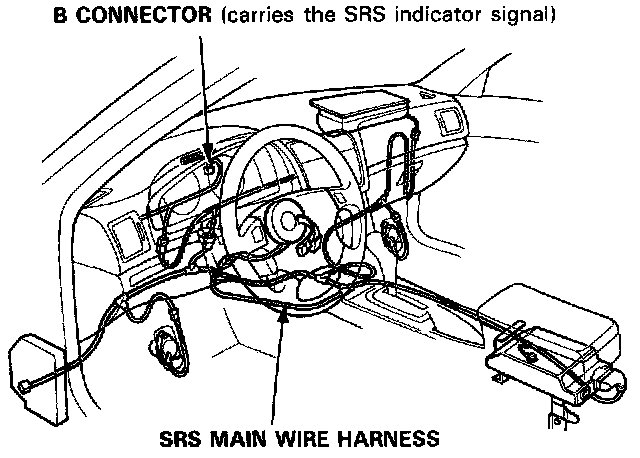
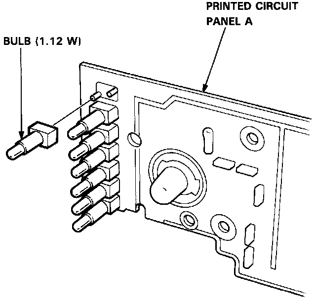

Shift Lever Position Indicator Bulb Replacement
CAUTION:^ All SRS electrical wiring harnesses are covered with yellow outer insulation.
^ When disconnecting the SRS wire harness, install the short connector to the airbag(s) then disconnect the wire harness.
^ Replace the entire affected SRS harness assembly, if there is an open circuit or damage to the wiring.
^ After installation of the gauge assembly, recheck the operation of the SRS indicator light.

1. Remove the gauge assembly.
2. Disassemble the gauge assembly.
3. Remove the bulb.

4. Installation is in the reverse order of removal.